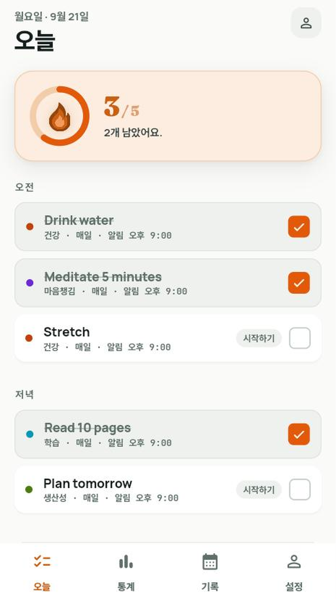
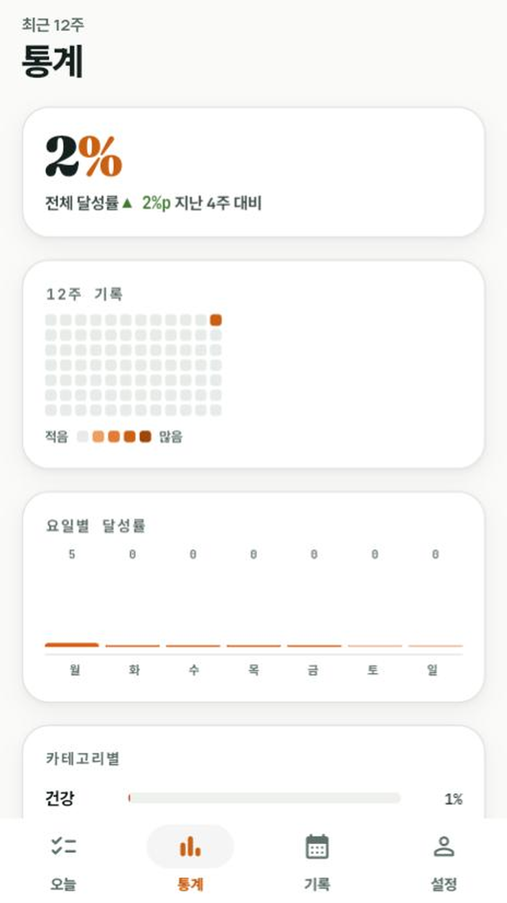
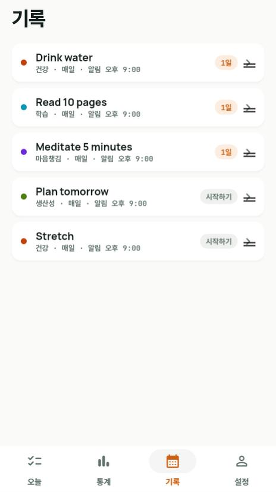
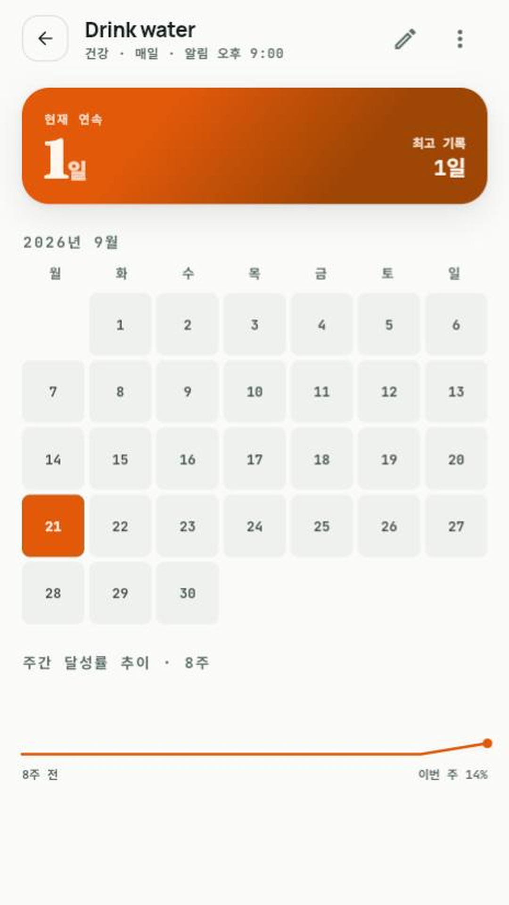
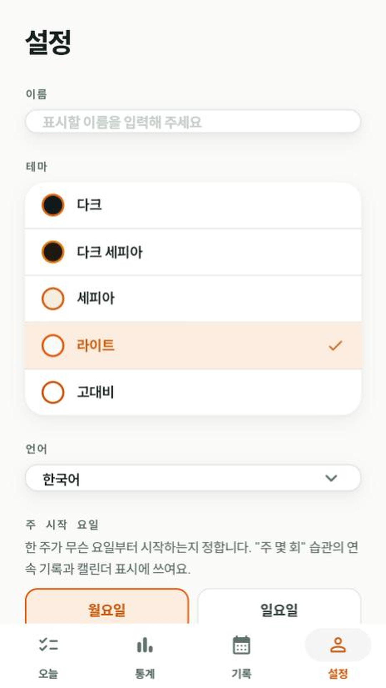

매일 작은 불씨 하나, 습관이 됩니다.

할 일을 체크할 때마다 오늘의 진행 링이 채워지고 불씨가 점점 밝아진다. 계정 없이, 기기 안에서만 조용히 쌓이는 습관 기록.
습관을 유지하는 건 알림이 아니라 꾸준함이라고 믿는다. 그래서 억지로 끌어당기는 대신, 체크 한 번의 손맛과 불씨가 밝아지는 작은 피드백 하나에만 집중했다. 계정도, 서버도 없다 — 기록은 전부 내 기기 안에만 남는다.
오늘 해야 할 습관을 오전/저녁으로 나눠 보여주고, 체크 한 번으로 끝. 드래그로 순서도 자유롭게 바꿀 수 있어요.
12주 히트맵, 요일별·카테고리별 달성률로 내 패턴을 한눈에 볼 수 있어요.
습관별 스트릭과 월별 캘린더, 8주 추이를 상세히 확인할 수 있어요.
습관마다 따로 알림 시각을 정할 수 있고, 라이트·다크·세피아 등 테마 5종, 17개 언어를 지원해요.
체크 기록을 CSV로 내보내 따로 보관할 수 있어요.
불씨는 계정이 없어요. 습관과 기록은 전부 기기 안에만 저장되고 서버로 전송되지 않아요.



